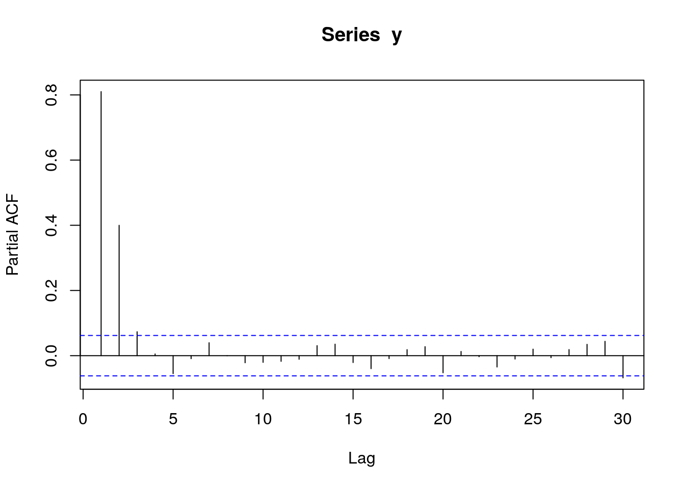
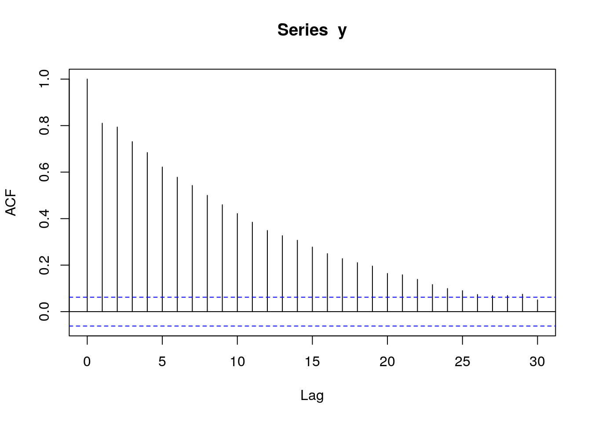
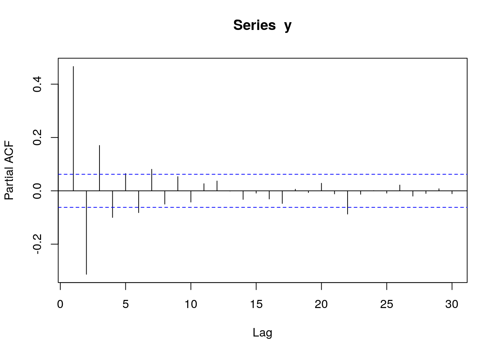

Chapter 3 Variables
library(data.table)
library(ggplot2)
set.seed(4)
AMPLITUDE <- 1.5
SEASONAL_HORIZONTAL_SHIFT <- 20
d <- data.table(date=seq.Date(
from=as.Date("2000-01-01"),
to=as.Date("2018-12-31"),
by=1))
d[,year:=as.numeric(format.Date(date,"%G"))]
d[,week:=as.numeric(format.Date(date,"%V"))]
d[,month:=as.numeric(format.Date(date,"%m"))]
d[,yearMinus2000:=year-2000]
d[,dayOfYear:=as.numeric(format.Date(date,"%j"))]
d[,seasonalEffect:=sin(2*pi*(dayOfYear-SEASONAL_HORIZONTAL_SHIFT)/365)]
d[,mu := exp(0.1 + yearMinus2000*0.1 + seasonalEffect*AMPLITUDE)]
d[,y:=rpois(.N,mu)]Showing the true data
q <- ggplot(d,aes(x=date))
q <- q + geom_point(mapping=aes(y=y))
q <- q + geom_line(mapping=aes(y=mu),colour="red")
q
Investigating the data
We take a quick look, but don’t see much
q <- ggplot(d,aes(x=date,y=y))
q <- q + geom_point()
q <- q + stat_smooth(colour="red")
q## `geom_smooth()` using method = 'gam'
We then drill down into a few years, and see a clear seasonal trend
q <- ggplot(d[year %in% c(2005:2010)],aes(x=dayOfYear,y=y))
q <- q + facet_wrap(~year)
q <- q + geom_point()
q <- q + stat_smooth(colour="red")
q## `geom_smooth()` using method = 'loess'
The Lomb-Scargle Periodogram shows a clear seasonality with a period of 365 days
lomb::lsp(d$y,from=100,to=500,ofac=1,type="period")
We then generate two new variables cos365 and sin365 and perform a simple poisson regression:
d[,cos365:=cos(dayOfYear*2*pi/365)]
d[,sin365:=sin(dayOfYear*2*pi/365)]
fit0 <- glm(y~yearMinus2000, data=d, family=poisson())
fit1 <- glm(y~yearMinus2000+sin365 + cos365, data=d, family=poisson())
print(lmtest::lrtest(fit0, fit1))## Likelihood ratio test
##
## Model 1: y ~ yearMinus2000
## Model 2: y ~ yearMinus2000 + sin365 + cos365
## #Df LogLik Df Chisq Pr(>Chisq)
## 1 2 -27287
## 2 4 -12805 2 28963 < 2.2e-16 ***
## ---
## Signif. codes: 0 '***' 0.001 '**' 0.01 '*' 0.05 '.' 0.1 ' ' 1print(summary(fit1))##
## Call:
## glm(formula = y ~ yearMinus2000 + sin365 + cos365, family = poisson(),
## data = d)
##
## Deviance Residuals:
## Min 1Q Median 3Q Max
## -3.7499 -0.9167 -0.1370 0.5955 3.2193
##
## Coefficients:
## Estimate Std. Error z value Pr(>|z|)
## (Intercept) 0.086654 0.014940 5.80 6.62e-09 ***
## yearMinus2000 0.100461 0.001049 95.75 < 2e-16 ***
## sin365 1.428417 0.010434 136.90 < 2e-16 ***
## cos365 -0.512912 0.008666 -59.19 < 2e-16 ***
## ---
## Signif. codes: 0 '***' 0.001 '**' 0.01 '*' 0.05 '.' 0.1 ' ' 1
##
## (Dispersion parameter for poisson family taken to be 1)
##
## Null deviance: 46221.4 on 6939 degrees of freedom
## Residual deviance: 7259.2 on 6936 degrees of freedom
## AIC: 25619
##
## Number of Fisher Scoring iterations: 5We see a clear significant seasonal effect. We can then use trigonometry to back-calculate the cos365 and sin365 variables to amplitude and location of peak/troughs:
b1 <- 1.428417 # sin coefficient
b2 <- -0.512912 # cos coefficient
amplitude <- sqrt(b1^2 + b2^2)
p <- atan(b1/b2) * 365/2/pi
if (p > 0) {
peak <- p
trough <- p + 365/2
} else {
peak <- p + 365/2
trough <- p + 365
}
if (b1 < 0) {
g <- peak
peak <- trough
trough <- g
}
print(sprintf("amplitude is estimated as %s, peak is estimated as %s, trough is estimated as %s",round(amplitude,2),round(peak),round(trough)))## [1] "amplitude is estimated as 1.52, peak is estimated as 111, trough is estimated as 294"print(sprintf("true values are: amplitude: %s, peak: %s, trough: %s",round(AMPLITUDE,2),round(365/4+SEASONAL_HORIZONTAL_SHIFT),round(3*365/4+SEASONAL_HORIZONTAL_SHIFT)))## [1] "true values are: amplitude: 1.5, peak: 111, trough: 294"We now investigate our residuals to determine if we have a good fit:
d[,residuals:=residuals(fit1, type = "response")]
d[,predicted:=predict(fit1, type = "response")]
q <- ggplot(d,aes(x=predicted,y=residuals))
q <- q + geom_point()
q <- q + stat_smooth(colour="red")
q## `geom_smooth()` using method = 'gam'
# this is for AR
pacf(d$residuals)
# this is for MA
acf(d$residuals)
We see a clear significant seasonal effect. We can then use trigonometry to back-calculate the cos365 and sin365 variables to amplitude and location of peak/troughs:
b1 <- 0.1934 # sin coefficient
b2 <- 0.1018 # cos coefficient
amplitude <- sqrt(b1^2 + b2^2)
p <- atan(b1/b2) * 365/2/pi
if (p > 0) {
peak <- p
trough <- p + 365/2
} else {
peak <- p + 365/2
trough <- p + 365
}
if (b1 < 0) {
g <- peak
peak <- trough
trough <- g
}
print(sprintf("amplitude is %s, peak is at %s, trough is at %s",round(amplitude,2),round(peak),round(trough)))## [1] "amplitude is 0.22, peak is at 63, trough is at 246"3.1 Showing that tscount::tsglm gets the same results as MASS::glmmPQL
library(MASS)
correlatedError <- as.numeric(arima.sim(model=list("ar"=c(-0.9)), n=1000, rand.gen = rnorm))
pacf(correlatedError) # this is for AR
acf(correlatedError) # this is for MA
d <- data.frame(correlatedError)
d$independentError <- rnorm(nrow(d))
d$x <- rnorm(nrow(d))
d$yCorrelated <- 2*d$x+d$correlatedError
d$yIndependent <- 2*d$x+d$independentError
d$ID <- 1
d$time <- 1:nrow(d)
summary(lm(yIndependent~x,data=d))##
## Call:
## lm(formula = yIndependent ~ x, data = d)
##
## Residuals:
## Min 1Q Median 3Q Max
## -3.2196 -0.7132 0.0044 0.6760 2.9593
##
## Coefficients:
## Estimate Std. Error t value Pr(>|t|)
## (Intercept) 0.06795 0.03144 2.161 0.0309 *
## x 1.97958 0.03159 62.657 <2e-16 ***
## ---
## Signif. codes: 0 '***' 0.001 '**' 0.01 '*' 0.05 '.' 0.1 ' ' 1
##
## Residual standard error: 0.9943 on 998 degrees of freedom
## Multiple R-squared: 0.7973, Adjusted R-squared: 0.7971
## F-statistic: 3926 on 1 and 998 DF, p-value: < 2.2e-16summary(fit <- lm(yCorrelated~x,data=d))##
## Call:
## lm(formula = yCorrelated ~ x, data = d)
##
## Residuals:
## Min 1Q Median 3Q Max
## -7.1132 -1.6599 0.0492 1.6199 6.5856
##
## Coefficients:
## Estimate Std. Error t value Pr(>|t|)
## (Intercept) -0.0008572 0.0741155 -0.012 0.991
## x 2.0247397 0.0744706 27.188 <2e-16 ***
## ---
## Signif. codes: 0 '***' 0.001 '**' 0.01 '*' 0.05 '.' 0.1 ' ' 1
##
## Residual standard error: 2.344 on 998 degrees of freedom
## Multiple R-squared: 0.4255, Adjusted R-squared: 0.4249
## F-statistic: 739.2 on 1 and 998 DF, p-value: < 2.2e-16pacf(residuals(fit)) # this is for AR
acf(residuals(fit)) # this is for MA
# independent data, no correlation structure needed
fit <- MASS::glmmPQL(yIndependent ~ x, random = ~ 1 | ID,
family = gaussian, data = d,
correlation=nlme::corAR1())## iteration 1summary(fit)## Linear mixed-effects model fit by maximum likelihood
## Data: d
## AIC BIC logLik
## NA NA NA
##
## Random effects:
## Formula: ~1 | ID
## (Intercept) Residual
## StdDev: 3.157677e-05 0.9933179
##
## Correlation Structure: AR(1)
## Formula: ~1 | ID
## Parameter estimate(s):
## Phi
## 0.05315098
## Variance function:
## Structure: fixed weights
## Formula: ~invwt
## Fixed effects: yIndependent ~ x
## Value Std.Error DF t-value p-value
## (Intercept) 0.0679433 0.03315919 998 2.04900 0.0407
## x 1.9792647 0.03162358 998 62.58825 0.0000
## Correlation:
## (Intr)
## x 0.001
##
## Standardized Within-Group Residuals:
## Min Q1 Med Q3 Max
## -3.241717414 -0.718010178 0.003911461 0.680810722 2.978619340
##
## Number of Observations: 1000
## Number of Groups: 1pacf(residuals(fit, type = "response")) # this is for AR
acf(residuals(fit, type = "response")) # this is for MA
pacf(residuals(fit, type = "normalized")) # this is for AR
acf(residuals(fit, type = "normalized")) # this is for MA
# dependent data, needs correlation structure, no correlation structure
fit <- MASS::glmmPQL(yCorrelated ~ x, random = ~ 1 | ID,
family = gaussian, data = d)## iteration 1summary(fit)## Linear mixed-effects model fit by maximum likelihood
## Data: d
## AIC BIC logLik
## NA NA NA
##
## Random effects:
## Formula: ~1 | ID
## (Intercept) Residual
## StdDev: 7.66613e-05 2.341391
##
## Variance function:
## Structure: fixed weights
## Formula: ~invwt
## Fixed effects: yCorrelated ~ x
## Value Std.Error DF t-value p-value
## (Intercept) -0.0008572 0.07411551 998 -0.011566 0.9908
## x 2.0247397 0.07447061 998 27.188441 0.0000
## Correlation:
## (Intr)
## x 0.001
##
## Standardized Within-Group Residuals:
## Min Q1 Med Q3 Max
## -3.03803335 -0.70892801 0.02100393 0.69187212 2.81270067
##
## Number of Observations: 1000
## Number of Groups: 1pacf(residuals(fit, type = "response")) # this is for AR
acf(residuals(fit, type = "response")) # this is for MA
pacf(residuals(fit, type = "normalized")) # this is for AR
acf(residuals(fit, type = "normalized")) # this is for MA
# dependent data, correct correlation structure
fit <- MASS::glmmPQL(yCorrelated ~ x, random = ~ 1 | ID,
family = gaussian, data = d,
correlation=nlme::corAR1())## iteration 1## iteration 2summary(fit)## Linear mixed-effects model fit by maximum likelihood
## Data: d
## AIC BIC logLik
## NA NA NA
##
## Random effects:
## Formula: ~1 | ID
## (Intercept) Residual
## StdDev: 1.698085e-05 2.341112
##
## Correlation Structure: AR(1)
## Formula: ~1 | ID
## Parameter estimate(s):
## Phi
## -0.9035598
## Variance function:
## Structure: fixed weights
## Formula: ~invwt
## Fixed effects: yCorrelated ~ x
## Value Std.Error DF t-value p-value
## (Intercept) 0.0010465 0.01668822 998 0.06271 0.95
## x 2.0007666 0.02289286 998 87.39695 0.00
## Correlation:
## (Intr)
## x 0.002
##
## Standardized Within-Group Residuals:
## Min Q1 Med Q3 Max
## -3.05408286 -0.70634334 0.02403998 0.69306761 2.81549938
##
## Number of Observations: 1000
## Number of Groups: 1pacf(residuals(fit, type = "response")) # this is for AR
acf(residuals(fit, type = "response")) # this is for MA
pacf(residuals(fit, type = "normalized")) # this is for AR
acf(residuals(fit, type = "normalized")) # this is for MA
library(MASS)
bacteria$x <- 1
fit <- glmmPQL(as.numeric(y) ~ trt + I(week > 2), random = ~ 1 | x,
family = poisson, data = bacteria)## iteration 1acf(residuals(fit,type="normalized"))
pacf(residuals(fit,type="normalized"))
bacteria$x <- 1
fit <- glmmPQL(as.numeric(y) ~ trt + I(week > 2), random = ~ 1 | x,
family = poisson, data = bacteria,
correlation=nlme::corAR1())## iteration 1## iteration 2acf(residuals(fit,type="normalized"))
pacf(residuals(fit,type="normalized"))
fit <- glmmPQL(as.numeric(y) ~ trt + I(week > 2), random = ~ 1 | ID,
family = poisson, data = bacteria)## iteration 1
## iteration 2## iteration 3acf(residuals(fit,type="normalized"))
pacf(residuals(fit,type="normalized"))
fit <- glmmPQL(as.numeric(y) ~ trt + I(week > 2), random = ~ 1 | ID,
family = poisson, data = bacteria,
correlation=nlme::corAR1(form=~ 1 | ID))## iteration 1## iteration 2## iteration 3## iteration 4acf(residuals(fit,type="normalized"))
pacf(residuals(fit,type="normalized"))